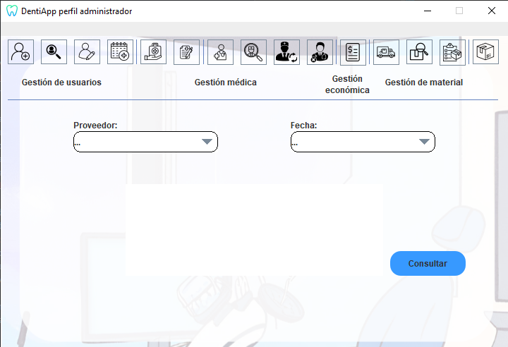

Ayuda: Consultar pedido
Los siguientes pasos le guiarán a través del proceso de consulta
de un pedido de material:
- Añadir proveedor a la consulta: Desde la pantalla,
busque el proveedor del que desea hacer la consulta utilizando el campo de búsqueda provisto (Proveedor).
- Especificar fecha: Después de especificar el proveedor,
en el campo desplegable proporcionado (Fecha), especifique la fecha
del pedido a consultar.
- Consultar pedido: Una vez que haya agregado el proveedor
deseado y
la fecha, haga clic en el botón "Consultar" para consultar los pedidos especificados.

Si tiene alguna pregunta o necesita ayuda adicional,
no dude en comunicarse con nosotros.